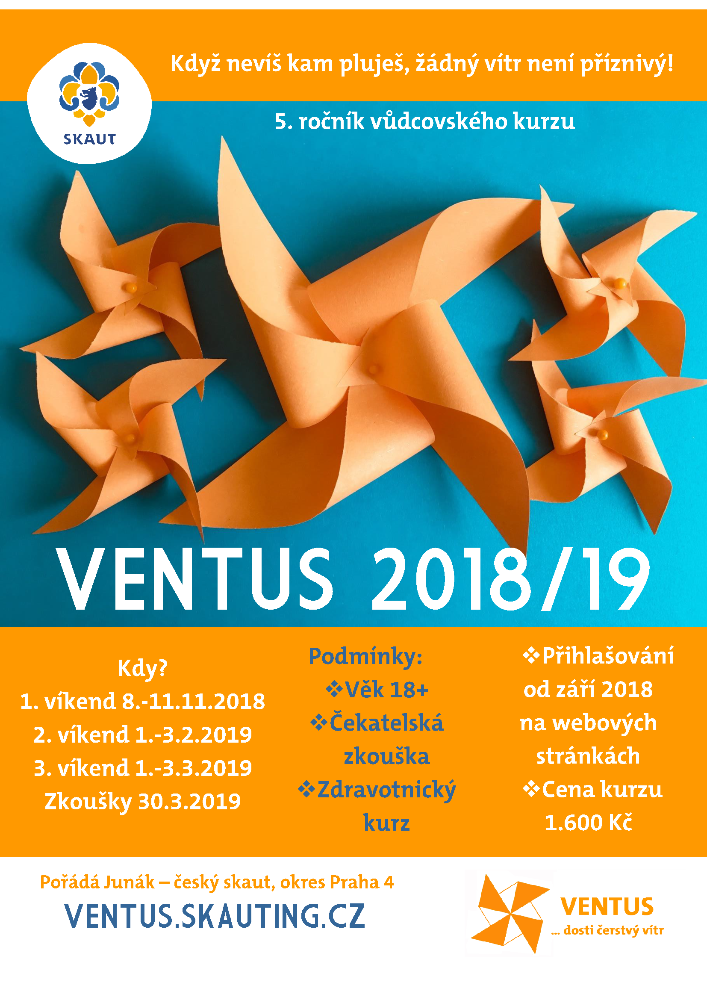

NOVINKY
Naplněna kapacita přihlašování
Kapacita přihlašování je v tuto chvíli naplněna. Všichni přijatí účastníci mají v emailu první informace. Je možné se přihlásit jako náhradník, pro případ, že se někdo z kurzu odhlásí.
Přihlašování
Přihlašování na 5. ročník Ventu startuje 1.9.2018 přes skautIS. Po přihlášení přes skautIS nám na email ventus@skaut.cz pošli svoji fotku a medailonek o sobě. Inspirovat se můžeš u instruktorů Ventu. Po zaslání medailonku ti přijde potvrzení přijetí přihlášky a další informace.
Uzávěrka přihlášek je 10. 10., proto neváhej a pojď do toho s námi!
Pozvánka na Ventus 2018/2019
Leták ke stažení v .pdf zde: ventus2018.pdf.